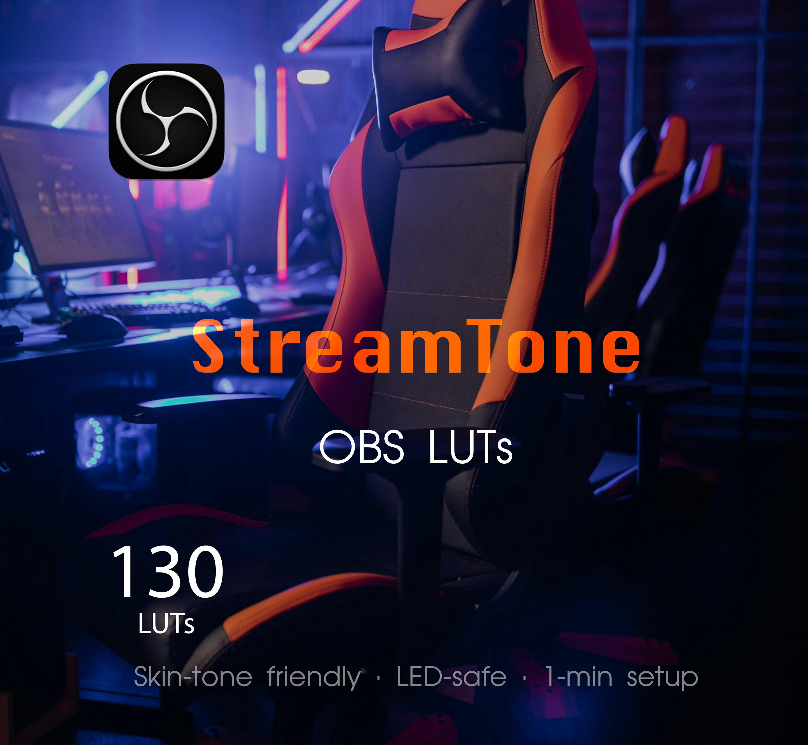

DesktopPreset · Creator education
Installer un LUT .CUBE dans OBS Studio : corriger les couleurs de webcam
Guide pour appliquer un look colorimétrique dans OBS sans exagérer les couleurs de peau. Un LUT ne remplace pas un éclairage correct.
Instructions étape par étape

- Réglez d’abord la lumière, l’exposition et la balance des blancs de la caméra.
- Dans OBS, sélectionnez la source vidéo, ouvrez « Filtres » puis ajoutez « Apply LUT » aux filtres d’effet.
- Choisissez un fichier .cube compatible dans le champ du chemin. OBS accepte également les LUT au format .png.
- Diminuez « Amount » si le résultat est trop intense ; comparez la peau, les blancs et les ombres.
- Si les couleurs deviennent étranges, vérifiez les réglages et l’espace colorimétrique du signal source.
Ce qu’un LUT peut faire
Une table de correspondance transforme des valeurs de couleur. Elle apporte un style, mais ne corrige pas entièrement une mauvaise exposition ou un éclairage inadapté.
Guide officiel
Official OBS Studio documentation. Consult the current app interface because features and labels can change.
DesktopPreset propose des LUT .CUBE pour les workflows webcam OBS en Rec.709. Vérifiez les caractéristiques avant achat.
Products are sold and delivered by Etsy. No affiliation with OBS Studio or LumaTouch is claimed.